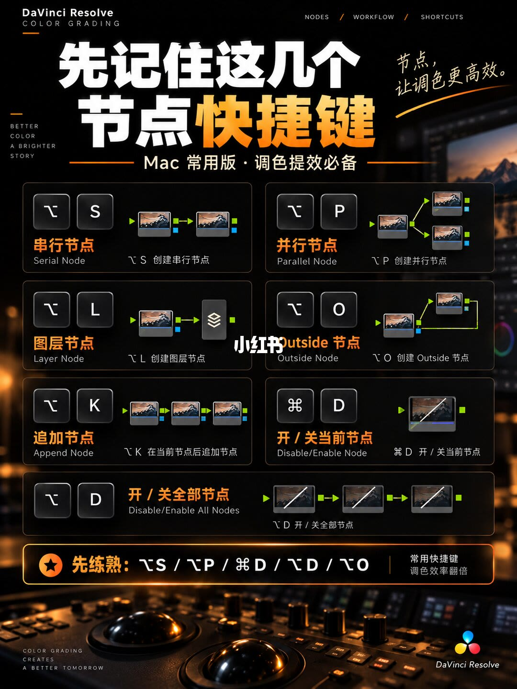

封面：快捷键和十条节点一起亮相
顶栏左边是 DaVinci Resolve、COLOR GRADING，右边是 NODES / WORKFLOW / SHORTCUTS。主标题是「达芬奇调色」，下一行是「节点快捷键＋节点流程」，副题「从快捷键到节点工作流，一次讲清」。右侧手写「调出你想要的画面。」
中间是带风景缩略图的节点。上排读作：01 降噪、02 矫正、03 饱和度、04 着色、05 肤色。下排读作：06 LUT、07 曝光分级、08 颜色分级、09 影调、10 定调。这里的第二步用的是「矫正」，和第三页的「校正」不是同一个字。
底部四个框是承诺，不是步骤：常用快捷键 / 提效必备；节点搭建思路 / 从基础到进阶；调色实战流程 / 系统化讲解；案例解析 / 学完即能用。后两页能对上前两块。这组图里没有案例画面，「案例解析」「学完即能用」停在封面口号上。
底部署名 DaVinci Resolve，右下「好影像，从调色开始。」左下英文 COLOR GRADING CREATES A BETTER TOMORROW，左侧竖排 BETTER COLOR A BRIGHTER STORY。背景是调色台轨迹球的虚化照片。这页不教按键，只给目录和一条十步节点的样子。
第二页：Mac 上先记的节点快捷键

标题是「先记住这几个节点快捷键」，副题「Mac 常用版 · 调色提效必备」。右侧手写「节点，让调色更高效。」页眉和封面同一套英文顶栏。这页自己标明是 Mac 常用版。
七个深色卡片，每张有中文名、英文名、按键和小节点图：
⌥S，串行节点，Serial Node，创建串行节点。图是前后相接的一条线。
⌥P，并行节点，Parallel Node，创建并行节点。图是一路分出上下两支再汇合。
⌥L，图层节点，Layer Node，创建图层节点。图是多路进入一个图层混合器。
⌥O，Outside 节点，Outside Node，创建 Outside 节点。标题有水印压住一角，英文 Outside Node 和「创建 Outside 节点」仍可读。图是选区之外再接一个节点。
⌥K，追加节点，Append Node，在当前节点后追加节点。图是一串三个节点，重点在末尾再接一个。
⌘D，开/关当前节点，Disable/Enable Node。图是单个节点上画了斜线。
⌥D，开/关全部节点，Disable/Enable All Nodes。图是一串节点都画了斜线。
底栏写「先练熟：⌥S / ⌥P / ⌘D / ⌥D / ⌥O」，右边是「常用快捷键」「调色效率翻倍」。七个卡片里，图层节点 ⌥L 和追加节点 ⌥K 没有进这行「先练熟」。底栏也没有解释为什么是这五个。
第三页：先基础，后局部，再风格
标题是「一套顺手的节点流程」，中间夹着「先基础，后局部，再风格」。右侧手写的是「清晰的流面，让调色更简单。」图上印的是「流面」，不是「流程」。
上半段节点：01 降噪，02 校正，03 饱和度，然后分成 04 着色和 05 肤色，汇到标着「混合器」的节点。封面第二步写「矫正」，这一页写「校正」。
下半段从 07 起：07 LUT，08 曝光分级，09 的编号在，标签被居中的水印挡住，无法确认，10 影调，11 定调。图上从 05 直接跳到 07，没有看到 06。封面下排是 06 LUT 到 10 定调，共五步且含「颜色分级」；这一页风格段是 07 到 11，也是五步，但 09 读不清，不能把封面的「颜色分级」抄过来当这一页的字。
节点图下面三块说明把顺序说完。左边齿轮：「先把基础校正做好」「降噪、校正、饱和度」「打好干净、准确的基础」。中间：「着色/肤色分开调」「两个方向，各司其职」「画面风格与肤色更可控」。右边 LUT 盒子：「LUT 后面继续精修」「分级、影调、定调」「让风格更统一、更有质感」。底部署名和封面相同：「好影像，从调色开始。」
所以 LUT 在这张图里不是终点。它放在基础和局部分支之后，后面还要曝光分级、影调和定调。着色和肤色被画成两条并行支路，再进混合器，对应「各司其职」。
汇总结论
三页合在一起，是「先记按键，再按阶段搭节点」。Mac 上高频的是串行 ⌥S、并行 ⌥P、开关当前 ⌘D、开关全部 ⌥D、Outside ⌥O；图层 ⌥L 和追加 ⌥K 图上有，但不在「先练熟」那一行。搭树时先降噪、校正、饱和度，着色和肤色分开再混合，LUT 之后继续做分级、影调和定调。
依据来自哪几页
- 第 1/3 页：十步节点的样子，以及「快捷键 / 搭建思路 / 实战流程 / 案例解析」四个模块名。02 标注为「矫正」，下排含「颜色分级」。
- 第 2/3 页：七个快捷键的键位和中英文名称，以及底栏「先练熟」的五个组合。
- 第 3/3 页：「先基础，后局部，再风格」，混合器，以及三块说明里的职责划分。02 标注为「校正」。节点 09 的标签无法确认。
边界
- 快捷键页写明「Mac 常用版」。图上没有 Windows 键位，不能从这三页推出另一套键盘。
- 封面有「案例解析 / 学完即能用」，三页里没有前后对比或具体素材，口号没有被画面兑现。
- 封面 01–10 与第 3 页 01–05、混合器、07–11 不是同一套编号。第 3 页节点 09 被水印挡住，标签记为无法确认。
- 这是作者整理的一套顺手流程，不是软件默认节点树，也没有降噪强度、LUT 名称或示波器读数。